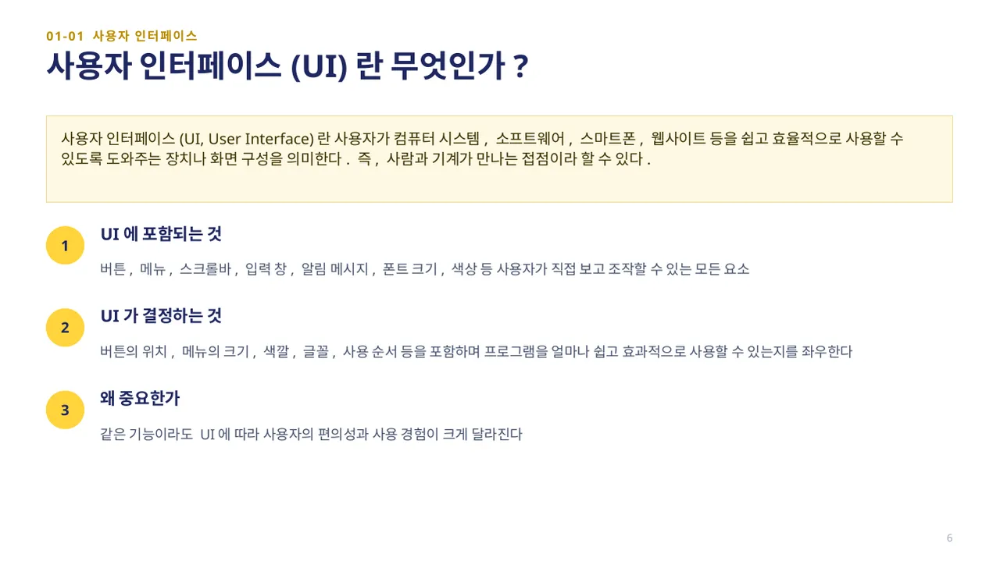
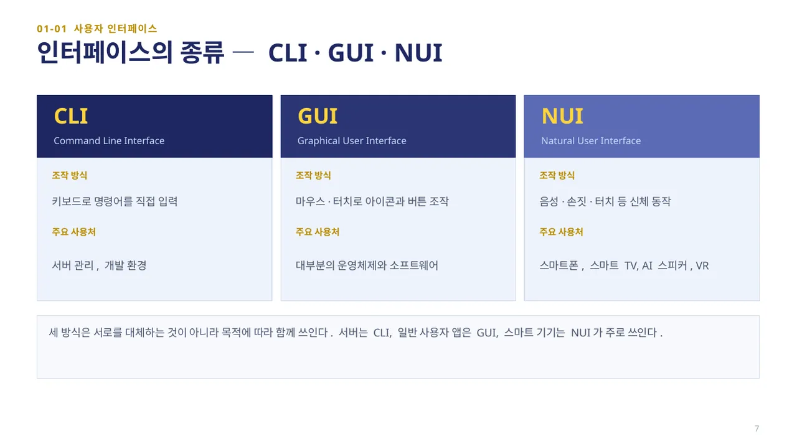
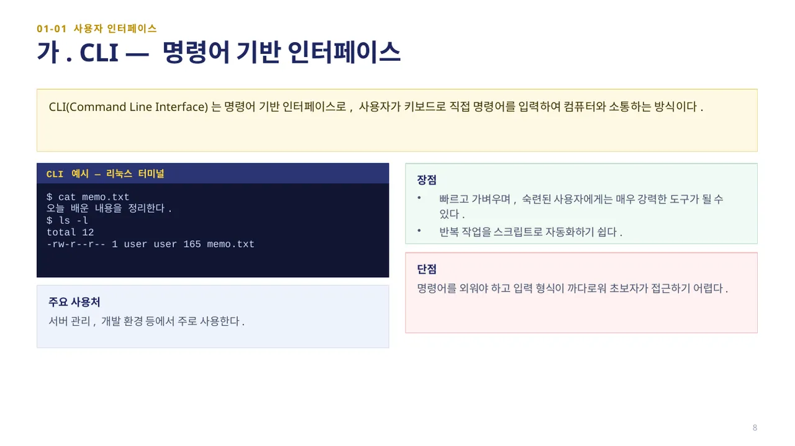
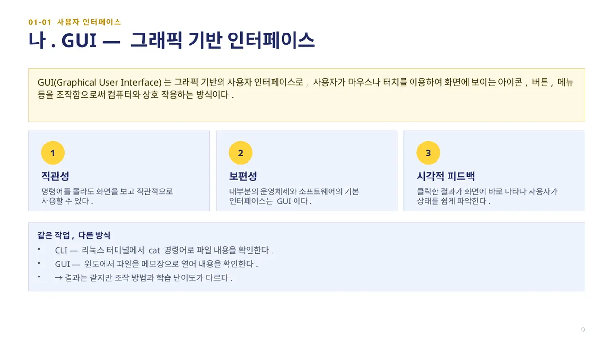
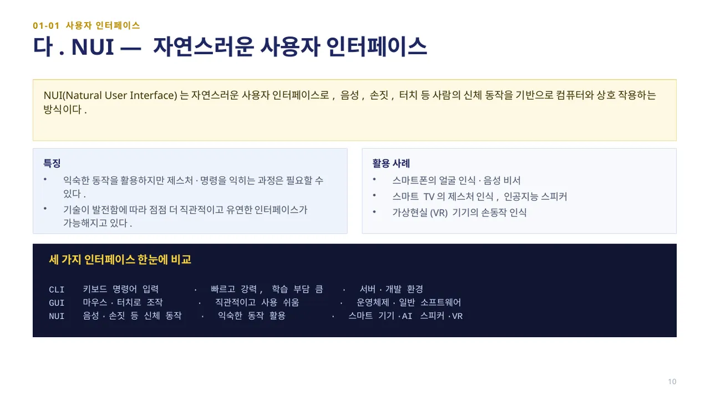

중단원 01. GUI 프로그래밍 개요 · 42–48쪽 소단원 01. 사용자 인터페이스· 43–44쪽
이 웹 주제의 연계 범위: 43–44, 47–48쪽
교과서 43–44, 47–48쪽
사용자 인터페이스 · CLI, GUI, NUI
사용자가 어떤 행동으로 프로그램에 의도를 전달하나요?

사용자 인터페이스(UI, User Interface)란, 사용자가 컴퓨터 시스템·소프트웨어·스마트폰·웹사이트 등을 쉽고 효율적으로 사용할 수 있도록 도와주는 장치나 화면 구성을 의미합니다. 즉, 사람과 기계가 만나는 접점이라 할 수 있습니다.
UI에는 사용자가 직접 보고 조작할 수 있는 모든 요소, 즉 버튼, 메뉴, 스크롤바, 입력 창, 알림 메시지, 폰트 크기, 색상 등이 포함됩니다. UI는 버튼의 위치, 메뉴의 크기, 색깔, 글꼴, 사용 순서 등을 모두 포함하는 개념으로, 프로그램을 얼마나 쉽고 효과적으로 사용할 수 있는지를 결정합니다.

인터페이스의 종류에는 대표적으로 CLI, GUI, NUI가 있습니다. 다음 슬라이드에서 하나씩 살펴봅니다.

CLI(Command Line Interface)는 명령어 기반 인터페이스로, 사용자가 키보드로 직접 명령어를 입력하여 컴퓨터와 소통하는 방식입니다. 이 방식은 빠르고 가벼우며, 숙련된 사용자에게는 매우 강력한 도구가 될 수 있습니다.
그러나 명령어를 외워야 하고 입력 형식이 까다로워 초보자가 접근하기 어렵다는 단점이 있습니다. 주로 서버 관리, 개발 환경 등에서 사용합니다.

GUI(Graphical User Interface)는 그래픽 기반의 사용자 인터페이스로, 사용자가 마우스나 터치를 이용하여 화면에 보이는 아이콘, 버튼, 메뉴 등을 조작함으로써 컴퓨터와 상호 작용하는 방식입니다. 명령어를 몰라도 직관적으로 사용할 수 있어 일반적으로 널리 사용됩니다. 대부분의 운영체제와 소프트웨어의 기본 인터페이스는 GUI입니다.
예를 들어 리눅스 터미널에서 cat 명령어로 파일 내용을 확인하는 것은 CLI이고, 윈도에서 파일을 메모장으로 열어 내용을 확인하는 것은 GUI입니다. 같은 목적(파일 내용 확인)이라도 인터페이스에 따라 조작 방법이 다릅니다.

NUI(Natural User Interface)는 자연스러운 사용자 인터페이스로, 음성, 손짓, 터치 등 사람의 신체 동작을 기반으로 컴퓨터와 상호 작용하는 방식입니다. 별도의 학습 없이도 쉽게 사용할 수 있으며, 최근에는 스마트폰, 스마트 TV, 인공지능 스피커, 가상현실 기기 등에서 활발히 활용되고 있습니다.
탐구 활동(44쪽): 사용자 인터페이스가 무엇인지 자신의 말로 설명해 보고, "dir 입력", "아이콘 클릭", "손짓으로 TV 조작"이 각각 어떤 인터페이스에 해당하는지 아래 「직접 해 보세요」에 적어 보세요.
직접 해 보세요
탐구 활동(44쪽) ①: 사용자 인터페이스란 무엇인지 자신의 말로 설명해 보세요.
탐구 활동(44쪽) ②: 다음 문장이 각각 CLI·GUI·NUI 중 무엇인지 적어 보세요. (1) "dir이라고 입력하면 폴더 목록이 나와요." (2) "아이콘을 클릭해서 그림판을 열었어요." (3) "손을 흔들면 스마트 TV가 반응해요."
 인공지능 파이썬 실무
인공지능 파이썬 실무